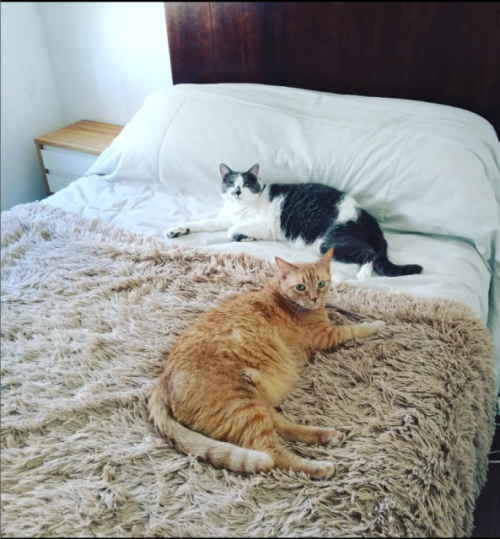

Arkuiris cat sitter
Cuidados unicos para compañeros del alma

¿que tan importante es sentirse acompañado para un gato? A pesar de la reputación que tienen los gatos de ser independientes, es importante garantizar su bienestar y cuidado , ya que la mayoría de ellos son propensos a mostrar signos de ansiedad o estrés ante cualquier cambio de rutina y de espacios. Cuidar gatitos cachorros o longevos en su propia casa también es un beneficio importante. Debido a sus edades, pueden ser más vulnerables a cualquier modificación de su entorno. Todos los gatos presentan diferentes rasgos de personalidad y hábitos; esto puede volverse más obvio cuando se quedan solos y sus familias están fuera de casa.